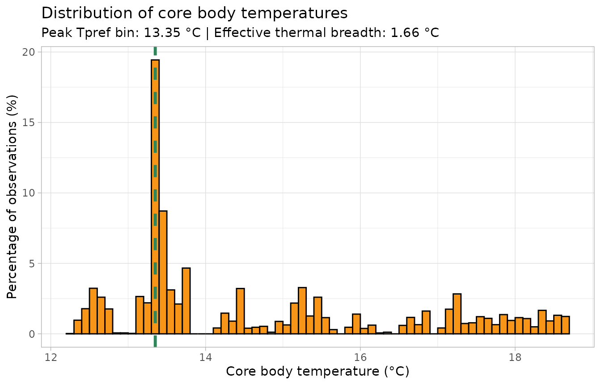
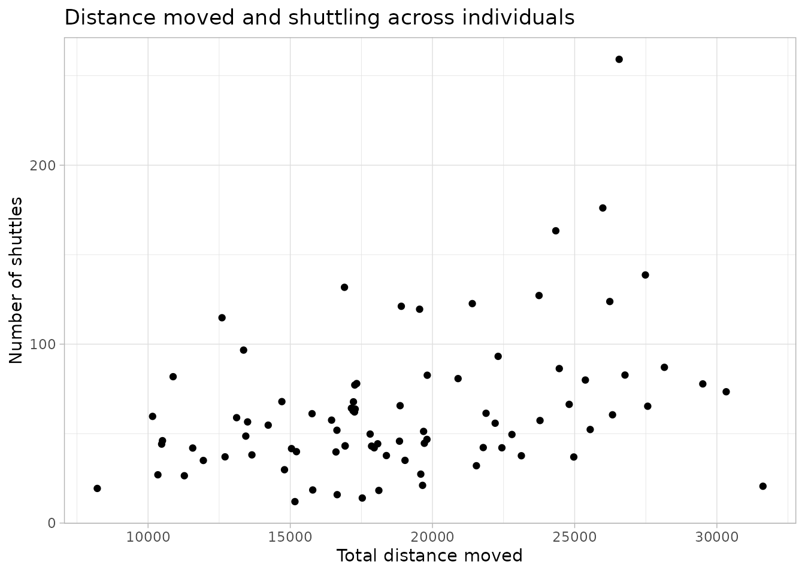
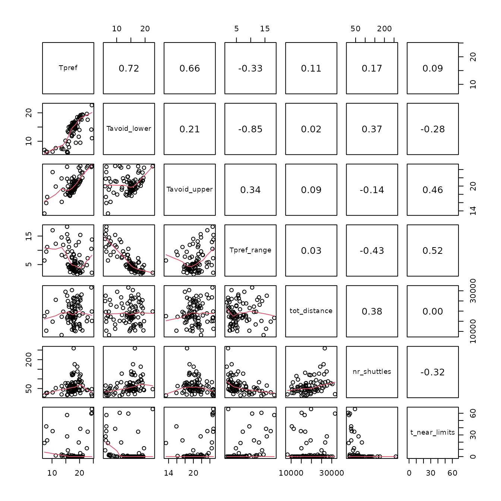

Purpose and scope
ShuttleboxR bridges the gap between data acquisition and statistical analysis in shuttle-box temperature experiments. Its purpose is to make the large files produced by these experiments easier to organise, calculate consistently and inspect for possible technical or behavioural problems.
The package follows three consecutive steps:
- Import and organise the data.
- Calculate shuttle-box metrics using explicit, reproducible settings.
- Inspect and troubleshoot the data before formal statistical analysis.
This workflow has two connected branches:
- Branch 1: single trials calculates and inspects the recording from one fish.
- Branch 2: multiple trials compiles one row of metrics per fish and examines the study as a whole.
The branches are deliberately connected. Project-level functions can flag a fish with unusual values, but the reason for that pattern can only be understood by returning to the original single-trial record and inspecting its temperature, tracking and movement data.
Raw shuttle-box recordings
|
+-- Branch 1: one fish
| import and organise
| -> calculate metrics
| -> inspect the trial
|
+-- Branch 2: the complete project
import all trials
-> compile one row per fish
-> inspect distributions and multivariate patterns
|
v
flag fish for review
|
v
return to Branch 1 plotsShuttleboxR supports data preparation, quality control and exploration. It does not select the inferential model for a study, and it does not automatically decide that an unusual fish should be excluded.
library(ShuttleboxR)
#> Warning in rgl.init(initValue, onlyNULL): RGL: unable to open X11 display
#> Warning: 'rgl.init' failed, will use the null device.
#> See '?rgl.useNULL' for ways to avoid this warning.How a shuttle-box trial generates the data
A temperature shuttle box contains a warm and a cold chamber. During the dynamic trial phase, the temperatures increase while the fish occupies the warm chamber and decrease while it occupies the cold chamber. By moving between chambers, the fish regulates the temperatures it experiences.
A typical recording therefore contains several linked data streams:
- time and trial phase;
- warm- and cold-chamber temperatures;
- chamber occupancy and shuttle events;
- fish position and distance moved; and
- estimated core body temperature (
core_T).
These streams should be considered together. A plausible preferred temperature is not enough to establish that a trial was successful if, for example, tracking failed, temperature control was interrupted or the fish remained motionless.
Workflow at a glance
| Branch and stage | Main question | Representative functions |
|---|---|---|
| Single trial: import and organise | Is this recording correctly structured and where does the experimental trial begin? |
read_shuttlesoft(), file_prepare(),
inspect()
|
| Single trial: calculate | What thermal and behavioural metrics describe this fish? |
calc_Tpref(), calc_Tavoid(),
calc_Tbreadth(), calc_gravitation(),
calc_shuttles(), calc_occupancy()
|
| Single trial: inspect | Did the apparatus, tracking and fish behaviour produce an interpretable trial? |
plot_T_gradient(), plot_tracking(),
plot_T_segmented(), plot_coreT_histogram(),
plot_heatmap()
|
| Project: import and calculate | What is the common metric table across all fish? |
read_shuttlesoft_project(),
calc_project_results(),
read_project_database()
|
| Project: inspect | Which fish or trials differ from the rest of the study and require individual review? |
plot_histograms(), project scatter plots,
correlation_matrix(), pca()
|
Branch 1: work with one fish
Step 1: import and organise a single trial
The simplest way to import a ShuttleSoft .txt file or
.csv export is:
fish <- read_shuttlesoft(file.choose())file.choose() opens an ordinary file-selection window.
By default, read_shuttlesoft() also runs
file_prepare(), which:
- creates elapsed time in seconds and hours;
- labels acclimation and trial phases;
- corrects dates when a trial passes midnight;
- identifies shuttle events; and
- converts the columns needed by later functions to the expected formats.
The current version no longer requires a separate metadata file for a
single trial. Values such as trial_start can be supplied
directly, and the core_T values already present in the
ShuttleSoft file are retained unless the user explicitly chooses to
recalculate them.
This vignette uses a shortened recording included with the package:
example_file <- system.file(
"extdata",
"Fish_8_13_3_example.csv",
package = "ShuttleboxR"
)
fish <- read_shuttlesoft(example_file)Check the structure with:
dim(fish)
#> [1] 6000 41
head(names(fish), 12)
#> [1] "time" "zone" "core_T" "Tpref_loligo" "INCR_T"
#> [6] "DECR_T" "x_pos" "y_pos" "velocity" "distance"
#> [11] "time_in_INCR" "time_in_DECR"
inspect(fish)
#> [1] "No errors were found in the dataset"Marking acclimation and trial phases
Many experiments begin with a static acclimation phase followed by a dynamic trial phase. Supply the clock time at which the dynamic trial began:
fish <- read_shuttlesoft(
file.choose(),
trial_start = "13:30:00"
)Rows before that time are labelled "acclimation". When
trial_start is omitted, the entire recording is treated as
trial data.
Most calculation functions can then use the same exclusion rule:
calc_Tpref(fish, exclude_acclimation = TRUE)
calc_Tbreadth(fish, exclude_acclimation = TRUE)
plot_coreT_histogram(fish, exclude_acclimation = TRUE)Step 2: calculate metrics for the fish
Primary data streams and summary metrics
Some calculations create data that other functions depend on. The most important are:
-
core_T, which is needed for thermal preference, avoidance, thermal breadth, gravitation time and time near limits; and - cumulative
distance, which is needed for total distance and movement speed.
ShuttleSoft normally supplies both. Use calc_coreT() or
calc_distance() only when the existing values need to be
replaced or reconstructed.
The main summary metrics are:
| Output | Interpretation |
|---|---|
| Tpref | Central selected temperature; median core_T by default |
| Tavoid_lower / Tavoid_upper | Lower and upper percentiles of core_T |
| Tpref_range | Difference between upper and lower avoidance temperatures |
| Tbreadth | Effective width of the complete core_T frequency distribution |
| grav_time | Estimated time taken to approach the preferred temperature |
| nr_shuttles | Number of moves between chambers |
| tot_distance | Total distance moved during the selected period |
| seconds_in_DECR / seconds_in_INCR | Time spent in the cold and warm chambers |
| t_near_limits | Proportion of observations near the system temperature limits |
| core_T_variance | Variation in core_T during the selected period |
| track_accuracy | Proportion of observations with successful position tracking |
Preferred and avoidance temperatures
calc_Tpref() summarises the selected temperatures. The
default is median core_T, although the mean and mode are
available:
Tpref <- calc_Tpref(
fish,
method = "median",
print_results = FALSE
)
Tpref
#> [1] 13.72
calc_Tpref(fish, method = "mean", print_results = FALSE)
#> [1] 14.71588
calc_Tpref(fish, method = "mode", print_results = FALSE)
#> [1] 13.37calc_Tavoid() returns lower and upper percentiles of the
core_T distribution. The defaults are the 5th and 95th
percentiles:
Tavoid <- calc_Tavoid(
fish,
percentiles = c(0.05, 0.95),
print_results = FALSE
)
Tavoid
#> [1] 12.56 18.30Their difference is the central percentile range:
Tpref_range <- Tavoid[2] - Tavoid[1]
Tpref_range
#> [1] 5.74Effective selected thermal breadth
Tpref_range uses only two points in the distribution.
calc_Tbreadth() was added later to provide a complementary
measure that uses the frequency of all experienced temperatures.
Temperatures are divided into equal-width bins and breadth is calculated as:
where is the temperature-bin width and is the proportion of observations in bin .
Tbreadth <- calc_Tbreadth(
fish,
bin_size = 0.1,
print_results = FALSE
)
Tbreadth
#> [1] 1.664842A fish concentrated around a narrow set of temperatures has a small
Tbreadth. A fish that distributes its time broadly and
relatively evenly has a larger value. The result is expressed in degrees
Celsius, but it is a measure of selected or experienced thermal breadth,
not physiological thermal tolerance. Use the same bin_size
for every fish being compared.
The percentile range and effective breadth should not be treated as interchangeable. Two fish can have similar upper and lower avoidance percentiles while differing substantially in how their time is distributed between them.
Behaviour, occupancy, movement and tracking
shuttles <- calc_shuttles(fish, print_results = FALSE)
occupancy <- calc_occupancy(fish, print_results = FALSE)
distance <- calc_tot_distance(fish, print_results = FALSE)
tracking <- calc_track_accuracy(fish, print_results = FALSE)
results <- data.frame(
metric = c(
"Preferred temperature (°C)",
"Lower avoidance temperature (°C)",
"Upper avoidance temperature (°C)",
"Preference percentile range (°C)",
"Effective thermal breadth (°C)",
"Number of shuttles",
"Seconds in DECR chamber",
"Seconds in INCR chamber",
"Total distance (cm)",
"Proportion tracked"
),
value = c(
Tpref,
Tavoid[1],
Tavoid[2],
Tpref_range,
Tbreadth,
shuttles,
occupancy[1],
occupancy[2],
distance,
tracking
)
)
knitr::kable(results, digits = 3)| metric | value |
|---|---|
| Preferred temperature (°C) | 13.720 |
| Lower avoidance temperature (°C) | 12.560 |
| Upper avoidance temperature (°C) | 18.300 |
| Preference percentile range (°C) | 5.740 |
| Effective thermal breadth (°C) | 1.665 |
| Number of shuttles | 37.000 |
| Seconds in DECR chamber | 3852.000 |
| Seconds in INCR chamber | 2148.000 |
| Total distance (cm) | 25630.970 |
| Proportion tracked | 1.000 |
Most metric functions also accept exclude_start_minutes
and exclude_end_minutes. Apply exclusions consistently when
values will be compared:
calc_Tbreadth(
fish,
exclude_start_minutes = 10,
exclude_end_minutes = 10,
print_results = FALSE
)
#> [1] 1.137697Step 3: inspect the single trial
The purpose of inspection is not simply to make attractive figures. It is to ask whether the trial provides a valid and interpretable measure of the intended behaviour.
Did the apparatus and tracking system work?
Useful checks include:
plot_T_gradient(fish)
plot_tracking(fish)
plot_T_segmented(fish)These plots can reveal interruptions in heating or cooling, changes in the temperature difference between chambers, tracking failures and an implausible segmented estimate of gravitation time.
Did the fish display interpretable behaviour?
The frequency distribution of core_T should be viewed
alongside its summary metrics:
plot_coreT_histogram(fish, bin_size = 0.1)
The dashed line marks the midpoint of the most frequently occupied
temperature bin, and the subtitle reports Tbreadth
calculated using the same bins.
Position and activity plots can help distinguish active thermoregulation from inactivity, tracking artefacts or prolonged occupancy of a particular area:
plot_heatmap(fish)
plot_distance(fish)
plot_interval(fish, column = "shuttle", interval_minutes = 30)
plot_speed_coreT(fish)
animate_movements(fish)Time near the upper or lower system limits is especially important to examine. It can indicate that the selected safety limits did not encompass the fish’s behaviour or that the fish was not responding to the gradient as expected. Other metrics, such as shuttling frequency or total distance, are more strongly species dependent and should be interpreted in an ecological context.
A plot can identify a reason for concern, but it cannot by itself establish that a fish is invalid. Similar patterns across many fish may indicate a systematic methodological issue or a genuine species-level behaviour.
Branch 2: work with the complete project
For most studies, the final objective is not to describe one fish but to create a consistent dataset across all trials. The project branch repeats the same three stages at the level of the study.
Step 1: import and organise multiple trials
Place the raw ShuttleSoft files in one directory and import them as a named list:
all_fish <- read_shuttlesoft_project(
directory = choose.dir()
)When individual trials have different start times, provide an optional metadata table:
metadata <- data.frame(
file_name = c("Fish_1.txt", "Fish_2.txt"),
trial_start = c("10:30:00", "14:15:00")
)
all_fish <- read_shuttlesoft_project(
metadata = metadata,
directory = choose.dir()
)compile_project_data() combines all time-series rows
into one long data frame. This can be useful for plotting or checking
the raw trajectories across several trials. For one-row-per-fish
results, use calc_project_results() instead.
Step 2: create the project results database
project_results <- calc_project_results(
all_fish,
exclude_acclimation = TRUE,
Tpref_method = "median",
Tavoid_percentiles = c(0.05, 0.95),
Tbreadth_bin_size = 0.1
)The same settings are applied to every trial, while the acclimation boundary is read separately from each file. This is important for making the resulting metrics comparable.
An existing project-results CSV can be imported directly. The package includes an example database containing 85 fish:
project_file <- system.file(
"extdata",
"project_database_example.csv",
package = "ShuttleboxR"
)
project_data <- read_project_database(project_file)
dim(project_data)
#> [1] 85 14
head(project_data[c(
"fileID", "mass", "Tpref", "Tavoid_lower", "Tavoid_upper",
"Tpref_range", "tot_distance", "nr_shuttles"
)])
#> fileID mass Tpref Tavoid_lower Tavoid_upper Tpref_range
#> 1 Fish_1_13_3 30 19.84438 18.47219 21.51655 3.044359
#> 2 Fish_2_13_2 28 20.05440 18.48400 21.21841 2.734412
#> 3 Fish_3_20_3_rev 22 20.06635 18.73885 20.88207 2.143220
#> 4 Fish_4_20_3_rev 27 18.53578 17.21512 19.60535 2.390230
#> 5 Fish_5_20_2_rev 16 20.36958 19.20577 21.34257 2.136799
#> 6 Fish_6_13_3_rev 29 16.87928 15.21686 19.00942 3.792558
#> tot_distance nr_shuttles
#> 1 13358.74 96.66285
#> 2 12599.95 114.75720
#> 3 22308.84 93.16992
#> 4 19816.90 82.61885
#> 5 21400.48 122.65630
#> 6 16928.99 43.08452read_project_database() standardises several column
names used by older ShuttleboxR versions, such as study_ID,
distance and shuttles.
The bundled project database predates calc_Tbreadth()
and therefore has no Tbreadth column. Thermal breadth
cannot be reconstructed from summary values alone; the raw temperature
observations must be reprocessed with
calc_project_results().
Step 3: identify trials that require closer inspection
Examine each metric across fish
plot_histograms() displays the distributions of key
metrics and returns fish that cross its univariate screening
thresholds:
project_outliers <- plot_histograms(
project_data,
id_col = "fileID"
)
#> TableGrob (3 x 2) "arrange": 6 grobs
#> z cells name grob
#> 1 1 (1-1,1-1) arrange gtable[layout]
#> 2 2 (1-1,2-2) arrange gtable[layout]
#> 3 3 (2-2,1-1) arrange gtable[layout]
#> 4 4 (2-2,2-2) arrange gtable[layout]
#> 5 5 (3-3,1-1) arrange gtable[layout]
#> 6 6 (3-3,2-2) arrange gtable[layout]
head(project_outliers)
#> Tpref Tavoid_upper Tavoid_lower tot_distance nr_shuttles t_near_limits
#> 1 <NA> <NA> <NA> <NA> <NA> <NA>
#> 2 <NA> <NA> <NA> <NA> <NA> <NA>
#> 3 <NA> <NA> <NA> <NA> <NA> <NA>
#> 4 <NA> <NA> <NA> <NA> <NA> <NA>
#> 5 <NA> <NA> <NA> <NA> <NA> <NA>
#> 6 <NA> <NA> <NA> <NA> <NA> <NA>An isolated value may reflect a technical problem, an unusual behavioural strategy or genuine biological variation. The histogram is a screening tool, not an exclusion rule.
Examine relationships among metrics
Bivariate plots can reveal combinations of metrics that are more informative than either value alone. For example, a fish with many shuttles but little total distance may deserve a different interpretation from a fish with both high shuttling and high movement.
plot_distance_vs_shuttles(
project_data,
label_points = FALSE
)
plot_limits_vs_distance(project_data, label_points = FALSE)
plot_limits_vs_shuttles(project_data, label_points = FALSE)A correlation matrix provides a broader summary of relationships:
correlation_values <- correlation_matrix(
project_data,
columns = c(
"Tpref", "Tavoid_lower", "Tavoid_upper", "Tpref_range",
"tot_distance", "nr_shuttles", "t_near_limits"
)
)
round(correlation_values, 2)
#> Tpref Tavoid_lower Tavoid_upper Tpref_range tot_distance
#> Tpref 1.00 0.72 0.66 -0.33 0.11
#> Tavoid_lower 0.72 1.00 0.21 -0.85 0.02
#> Tavoid_upper 0.66 0.21 1.00 0.34 0.09
#> Tpref_range -0.33 -0.85 0.34 1.00 0.03
#> tot_distance 0.11 0.02 0.09 0.03 1.00
#> nr_shuttles 0.17 0.37 -0.14 -0.43 0.38
#> t_near_limits 0.09 -0.28 0.46 0.52 0.00
#> nr_shuttles t_near_limits
#> Tpref 0.17 0.09
#> Tavoid_lower 0.37 -0.28
#> Tavoid_upper -0.14 0.46
#> Tpref_range -0.43 0.52
#> tot_distance 0.38 0.00
#> nr_shuttles 1.00 -0.32
#> t_near_limits -0.32 1.00Use PCA as a multivariate screening tool
PCA summarises correlated project metrics and can flag fish that differ across several variables simultaneously. Select variables that are scientifically relevant rather than automatically including every numeric column:
pca_data <- project_data[c(
"fileID", "mass", "total_length", "Tpref", "Tavoid_lower",
"Tavoid_upper", "Tpref_range", "tot_distance", "nr_shuttles"
)]
project_pca <- pca(
pca_data,
print_labels = FALSE,
var_col = "Tpref"
)
#> Warning: This FactoMineR PCA result contains only 5 eigenvalues and does not
#> include the complete spectrum. Refit the PCA with a larger `ncp` before drawing
#> a complete scree plot.
project_pca$plots$biplot
The full output includes:
project_pca$plots$screeplot
project_pca$plots$pc1contributionplot
project_pca$plots$varplot
project_pca$pca_scores
project_pca$pca_loadings
project_pca$outliersThe outlier table combines Mahalanobis-distance and DBSCAN screens. These methods define unusual multivariate positions in different ways, but neither establishes that a trial should be discarded.
The recommended quality-control loop
The most important project-level step is to return flagged fish to the single-trial branch:
# Example identifier flagged by a histogram or PCA
fish_to_check <- all_fish[["Fish_17.txt"]]
# Was temperature control stable?
plot_T_gradient(fish_to_check)
# Was tracking adequate?
plot_tracking(fish_to_check)
# What did the thermal distribution look like?
plot_coreT_histogram(fish_to_check)
# Where did the fish spend its time?
plot_heatmap(fish_to_check)
# Inspect the calculated values together
calc_Tpref(fish_to_check, print_results = FALSE)
calc_Tavoid(fish_to_check, print_results = FALSE)
calc_Tbreadth(fish_to_check, print_results = FALSE)
calc_shuttles(fish_to_check, print_results = FALSE)
calc_extremes(fish_to_check, print_results = FALSE)A transparent decision process is:
- Flag an unusual pattern using project-level plots or PCA.
- Inspect the original trial for technical, tracking and behavioural explanations.
- Contextualise the pattern using the species’ ecology and the wider dataset.
- Document the rationale for retaining, qualifying or excluding the trial.
This helps avoid both retaining technically invalid trials and removing valid biological variation simply because it is unusual.
Optional recalculation of core temperature
Most users should retain the core_T column already
present in ShuttleSoft files. calc_coreT() is only needed
when those values must be replaced using a separate thermal-lag
model:
fish <- calc_coreT(
fish,
mass = 12.4,
a_value = 0.05,
b_value = -0.25
)The a_value and b_value coefficients cannot
be estimated from the ShuttleSoft file. They must come from an
appropriate calibration or published source.
Common problems
The package says that trial_phase is
missing. Import the file with read_shuttlesoft()
or run file_prepare() before requesting acclimation
exclusion.
Everything is labelled as trial data. This is
expected when no trial_start is supplied. Re-import the
file with the actual trial start time when acclimation needs to be
removed.
Thermal-breadth values change when bin_size
changes. This is expected because the index is based on
temperature bins. Choose a biologically and instrumentally sensible bin
width and keep it constant across fish.
The package asks for a_value and
b_value. These are only required for optional
recalculation with calc_coreT(). They are not needed to
analyse the existing core_T values.
A fish is flagged as an outlier. Treat the result as a prompt for single-trial inspection, not as an automatic exclusion decision.